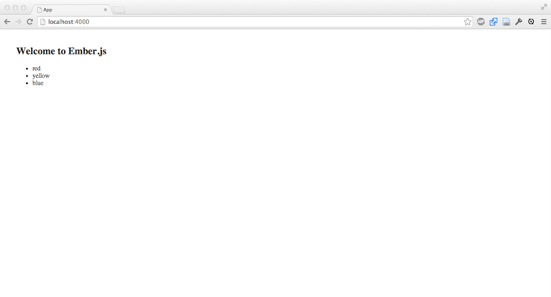
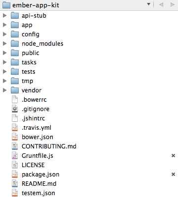
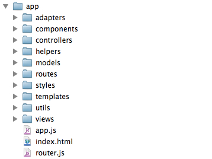
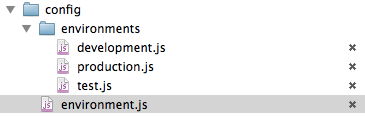
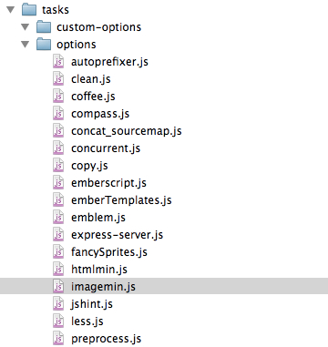

by Manuel Wiedenmann
Ruby on Rails & Ember.js freelancer. Working with ember.js since summer 2012.
ember.js
A framework for creating ambitious web applications.
AngularJS
AngularJS is a toolset for building the framework most suited to your application development.
Fluent 2014, "Keynote With Yehuda Katz and Tom Dale"
git clone git@github.com:stefanpenner/ember-app-kit.git
cd ember-app-kit && rm -rf .git
npm install -g grunt-cli
npm install -g bower
npm install
grunt server
Running "expressServer:debug" (expressServer) task
Using API Stub
>> Started development server on port 8000.
Running "watch" task
Waiting...




Best Grunt config I have seen so far

grunt
grunt server
grunt test
grunt test:server
grunt dist
grunt server:dist
// Grundfile.js
// * for LESS, run `npm install --save-dev grunt-contrib-less`
// * for SCSS (without SASS), run `npm install --save-dev grunt-sass`
// * for Compass, run `npm install --save-dev grunt-contrib-compass`
// * for Stylus/Nib, `npm install --save-dev grunt-contrib-stylus`
You can even use EmberScript
// Grundfile.js
// * for Coffeescript, run `npm install --save-dev grunt-contrib-coffee`
// * For EmberScript, run `npm install --save-dev grunt-ember-script`
// Grundfile.js
// * for Emblem, run the following commands:
// `npm uninstall --save-dev grunt-ember-templates`
// `npm install --save-dev grunt-emblem`
// `bower install emblem.js --save`
generate component x-buttonset
generate controller users/mini-profile
generate controller application type:array
generate helper capitalize
generate mixin queryable
generate route index
generate template profile
generate view index
// Grundfile.js
// * for LiveReload, `npm install --save-dev connect-livereload`
// * for displaying the execution time of the grunt tasks,
// `npm install --save-dev time-grunt`
// * for minimizing the index.html at the end of the dist task
// `npm install --save-dev grunt-contrib-htmlmin`
// * for minimizing images in the dist task
// `npm install --save-dev grunt-contrib-imagemin`
// * for using images based CSS sprites (http://youtu.be/xD8DW6IQ6r0)
// `npm install --save-dev grunt-fancy-sprites`
// `bower install --save fancy-sprites-scss`
// * for automatically adding CSS vendor prefixes (autoprefixer)
// `npm install --save-dev grunt-autoprefixer`
// * for package import validations
// `npm install --save-dev grunt-es6-import-validate`
Bower
{
"name": "ember-app-kit",
"dependencies": {
"handlebars": "~1.1.2",
"jquery": "~1.9.1",
"qunit": "~1.12.0",
"ember-qunit": "https://github.com/rpflorence/ember-qunit.git#master",
"ember": "~1.4.0",
"ember-data": "~1.0.0-beta.7",
"ember-resolver": "git://github.com/stefanpenner/ember-jj-abrams-resolver.git#master",
"ic-ajax": "~0.3.0",
"ember-testing-httpRespond": "~0.1.1"
},
"resolutions": {
"ember": "~1.4.0"
}
}
Rather than use AMD (Require.js) or CommonJS (Browserify) modules, apps built using the Ember App Kit use ES6 modules through the ES6 module transpiler. This means that you can build your apps using syntax from future JavaScript versions, but output AMD modules that can be used by existing JavaScript libraries today.
App.FooRoute = Ember.Route.extend({
model: function() {
return ['red', 'yellow', 'blue'];
}
});
var FooRoute = Ember.Route.extend({
model: function() {
return ['red', 'yellow', 'blue'];
}
});
export default FooRoute;
import FooRoute from "appkit/routes/foo";
| Lookup | File |
|---|---|
| adapters/post | app/adapters/post.js |
| components/post-title | app/components/post-title.js |
| controllers/post | app/controllers/post.js |
| helpers/translate-title | app/helpers/translate-title.js |
| models/post | app/models/post.js |
| routes/post | app/routes/post.js |
| serializers/post | app/serializers/post.js |
| transforms/array | app/transforms/array.js |
| views/post | app/views/post.js |
// package.json
APIMethod: "stub"
// api-stub/routes.js
module.exports = function(server) {
server.namespace("/api", function() {
server.get('/posts', function(req, res) {
res.send({
post: {
body: "hello mocking world"
}
});
});
});
};
// package.json
APIMethod: "proxy",
proxyURL: "http://apiserver.dev:3000",
proxyPath: "/api"
moduleFor('route:index', "Unit - IndexRoute", {
//needs: ['controller:index'], only neccessary if you want to load other items into the runtime
setup: function () {},
teardown: function () {}
} );
import { test, moduleForModel } from 'appkit/tests/helpers/module-for';
import Post from 'appkit/models/post';
moduleForModel('post', 'Post Model', {
needs: ['model:comment']
});
test("Post is a valid ember-data Model", function () {
var post = this.subject({title: 'A title for a post', user: 'bob'});
ok(post);
ok(post instanceof DS.Model);
ok(post instanceof Post);
});
Around 3x faster than Handlebars
You can opt out from jQuery
htmlbars @github
Browser compilation library – a build tool for applications that run in the browser
It's super fast!
broccoli @github
ember-cli will replace EAK
ember-cli @github
manuel@funkensturm.de
@fsmanuel
github.com/fsmanuel